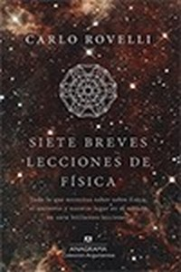

Library › History
Seven Brief Lessons on Physics - Summary & Key Lessons

Bending time, galaxies in bloom, and the price of wonder: the most beautiful short physics book ever written.
📖 OPEN THE FULL INTERACTIVE BREAKDOWN →🌐 Read it in Hindi, Hinglish, Gujarati, Tamil & 22 more languages - free, with audio.
💡 The Big Idea
Rovelli, a loop-quantum-gravity physicist, writes science like an Italian love letter: Einstein's general relativity as a map of curved spacetime where mass bends time itself; quantum mechanics as a granular, relational world where reality is interaction; the cosmos as knots of quanta; time as something that may not exist fundamentally; heat as the author of time's arrow; and finally us, humans, as brief arrangements of matter that got curious. The book's argument is quiet but vast: the scientific image is more beautiful than the mythical one, and wonder is a discipline.
🧠 The 10 Key Lessons
Lesson 1: The Most Beautiful of Theories
Lesson 1: General Relativity
Einstein's general relativity: space is not an empty stage but a flexible fabric, and matter bends it; gravity is not a force but the curvature. Time itself runs faster at altitude than at sea level.
📖 Example: The twin towers of theory: Newton's force replaced by geometry, and the equations that predicted black holes and the bending of starlight decades before telescopes saw either. Read the full example →
⚡ Do this: Hold one daily certainty up to relativity: even 'now' is local. Certainty shrinks; wonder grows.
Lesson 2: Quanta: Reality Is Granular
Lesson 2: Quantum Mechanics
Energy comes in packets; particles have no definite properties until they interact; the world is made of probabilities and relations, not tiny billiard balls. Strange, tested, and the most accurate theory we have.
📖 Example: Electron in a double slit: it behaves like a wave of possibility until it interacts, then a dot. The interaction, not the object, carries the definiteness. Read the full example →
⚡ Do this: Adopt the epistemology: some things have no definite answer until interaction. Stop demanding certainty from systems still in motion.
Lesson 3: The Architecture of the Cosmos
Lesson 3: The Cosmos
The universe is a hierarchy of structures, clusters in filaments in voids, all flying apart from a hot beginning 13.8 billion years ago, with a large-scale architecture that looks like foam and behaves like a wave.
📖 Example: Galaxies are not scattered but strung on filaments like dew on a spiderweb: the largest map humans ever drew came from measuring ancient light. Read the full example →
⚡ Do this: Zoom out mentally once a week: your street, planet, galaxy, filament. Scale is the antidote to both vanity and despair.
Lesson 4: Particles: Mostly Empty, Wholly Interactions
Lesson 4: Particles
The Standard Model: a small set of fields whose quanta, quarks, electrons, photons, gluons, make everything, held by three forces, gravity still missing. Matter is mostly empty space structured by interaction.
📖 Example: A table is a vast emptiness of fields knotted by interactions; solidity is the mutual refusal of electron clouds, not stuff touching stuff. Read the full example →
⚡ Do this: Think of your team or company the same way: it is interactions, not objects. Fix the interactions and the matter follows.
Lesson 5: Quantum Gravity: The Space That Quivers
Lesson 5: Loop Quantum Gravity
Rovelli's own field: space itself may be granular, woven of quanta of geometry, loops, at the Planck scale; the smooth fabric of Einstein is the weave seen from far away.
📖 Example: Like cloth that looks continuous but is woven of threads, spacetime may be a weave of finite loops, with a smallest possible unit of space. Read the full example →
⚡ Do this: Remember that today's smooth certainties have threads: look for the weave under any surface you study.
Lesson 6: Heat and the Arrow of Time
Lesson 6: Time and Heat
Time's direction is not written in the base laws, which run equally forward and backward: it comes from thermodynamics, from heat flowing and disorder growing. Time is statistics, not substance.
📖 Example: A cup of tea cools because there are overwhelmingly more ways to be lukewarm than to be hot here, cold there: the arrow of time is bookkeeping of possibilities. Read the full example →
⚡ Do this: Manage entropy in your own systems, rooms, teams, code: order is a paid subscription, default is decay.
Lesson 7: Time May Not Exist
Lesson 6: Time
At the fundamental level, time may not be a real flow but a relational bookkeeping between events: the equations of quantum gravity can be written without a time variable at all.
📖 Example: In loop quantum gravity's equations, there is no t: only relations between changing things. Time is what clocks measure, not what rules the world. Read the full example →
⚡ Do this: Two disciplines follow: be punctual (local time matters to humans) and be patient (deep processes ignore your schedule).
Lesson 8: Ourselves: Curious Stars
Lesson 7: Humans
We are arrangements of matter that contemplate themselves: a few kilograms of stardust, temporarily organized, looking back at the whole. Identity is process, a song the molecules sing for a while.
📖 Example: Rovelli quotes Hugo and Ovid: the self as a river, a pattern of flowing, not a stone. Every atom in you will be elsewhere; the song goes on. Read the full example →
⚡ Do this: Take the long view on your problems: the matter composing your worry has been stars. Hold seriousness and lightness together.
Lesson 9: Science as Wonder With Receipts
Throughout
The book's method: wonder is not opposed to rigor but built from it. The equations are beautiful because they are true, and true because checked against the world a million times.
📖 Example: Einstein's equations survived eclipse expeditions, GPS satellites and gravitational-wave detectors: beauty here is not opinion, it is survival under attack. Read the full example →
⚡ Do this: Let your awe be testable: when something moves you, ask what evidence would change your mind, then go look.
Lesson 10: Ignorance Is the Engine
Conclusion
Rovelli ends on humility: every answer opens larger questions, and knowledge is the finest flower of ignorance. The frontier is not a wall but a horizon that keeps moving as you walk.
📖 Example: Each generation's certainty, ether, absolute time, fixed continents, became the next generation's opening chapter. Read the full example →
⚡ Do this: Keep one open question in your notebook at all times. When it closes, open a bigger one immediately.
✅ 5-Step Action Plan
- Read the seven lessons in order; they total under two hours.
- Keep one open question about how the world works in your notebook this year.
- Spend two green hours a week under the sky these lessons describe.
⚠️ When This Doesn't Work
Lyricism compresses: specialists note simplifications, and loop quantum gravity is one contested program among several (string theory's advocates disagree). It is a doorway, not a textbook.
💀 The Graveyard Proves It
📷 Hubble's Mirror - The $1.5B Telescope That Launched Blurry. Burn: $1.5B + 3 years of ridicule. Read the full case study →
💬 Best Quotes from Seven Brief Lessons on Physics
- “We are made of the same stardust of the world, and a drawn-in breath of the same air.”
- “Space is curved everywhere, matter bends it, and time passes at different rates in different places.”
- “What we call knowledge is nothing but the finest flower of ignorance.”
Interactive version: mark lessons as read, listen in your language, share quote cards.